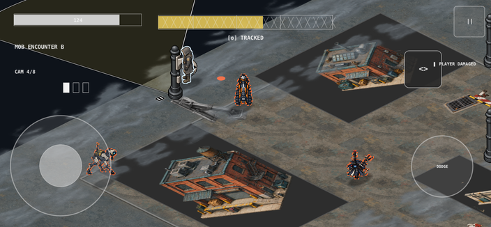
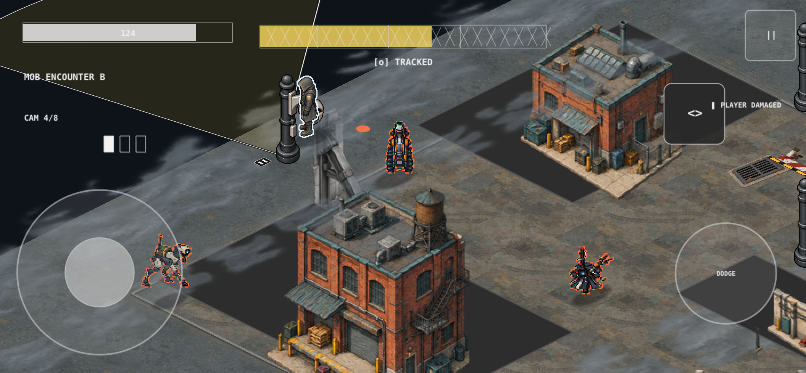
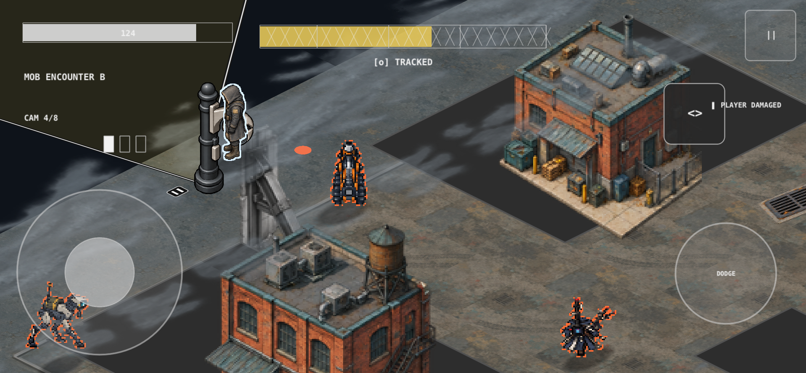

Same replayed hostile encounter. Buildings and physical props now remain upright; ground art follows the projected plane. This is a diagnostic capture, not the approved benchmark scene.



Focused renderer test: 1 passed, 0 failed. Remaining visible defects: buildings do not align with their ground footprints, depth/occlusion and arena-edge framing need correction, and legacy enemy art remains unsuitable. Production outlines are present in this encounter diagnostic.